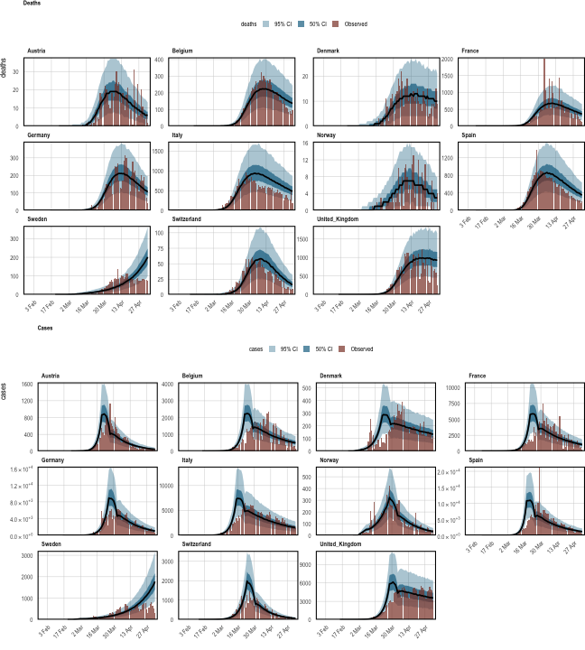
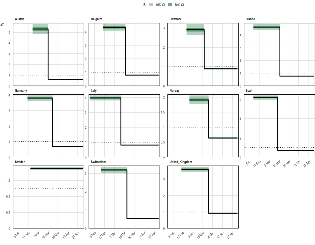
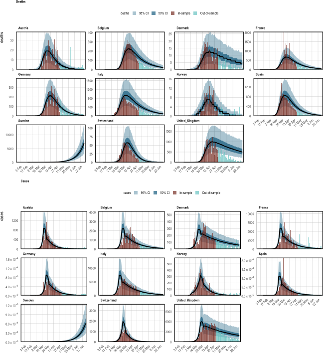
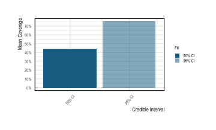

vignettes/multilevel-multi-obs.Rmd
multilevel-multi-obs.RmdThe multilevel tutorial pooled parameters across eleven countries, but fitted to a single data stream (deaths). The multiple observations tutorial jointly fitted two data streams, but to a single region. These two capabilities are independent, and epidemia lets you use both at once: a hierarchical model for \(R_t\) across groups, conditioned on several observation series simultaneously.
That combination is worth its own example because the two features interact. Each observation series has its own ascertainment regression and its own auxiliary parameters, while the transmission model shares information across groups. Deaths pin down the absolute scale of the epidemic through a comparatively stable infection fatality rate; cases are far more numerous and so are more informative about changes in transmission, but their ascertainment rate is much more uncertain. Fitting both lets each do the job it is suited to, and partial pooling then lets countries with less informative data borrow strength from the rest.
One limitation to keep in mind throughout: partial pooling applies to the
\(R_t\) regression only. epirt() takes a prior_covariance argument;
epiobs() does not. Group-specific ascertainment must be written as fixed
effects (for example deaths ~ 0 + country) rather than as (1 | country).
We use EuropeCovid2, which holds daily deaths and daily cases for eleven
European countries, together with the binary intervention series used by
Flaxman et al. (2020). We use all eleven.
That is worth a word, because it is tempting to cut the panel down to make the example run faster. Doing so costs more than it saves. A partially pooled slope asks the data to estimate a variance across groups, and a handful of groups barely identifies it: the global effect \(\beta\) and the deviations \(b^{(m)}\) can trade off against each other almost freely, which shows up as a ridge the sampler has to crawl along. Fitting this model to three countries leaves divergent transitions and a tail effective sample size in the tens. The sampler diagnostics below show what the full panel looks like instead.
data("EuropeCovid2")
data <- EuropeCovid2$data
groups <- sort(unique(as.character(data$country)))
groups## [1] "Austria" "Belgium" "Denmark" "France"
## [5] "Germany" "Italy" "Norway" "Spain"
## [9] "Sweden" "Switzerland" "United_Kingdom"As in the multilevel tutorial, seeding is assumed to begin thirty days before the tenth cumulative death in each country, and the model is fitted up to the 5th of May. The remainder is held back so we can forecast into it.
Reproduction numbers follow the same partially pooled step function as the multilevel tutorial, simplified to a single intervention so that the example stays small:
\[ R^{(m)}_t = R' g^{-1}\left(b^{(m)}_0 + \left(\beta + b^{(m)}\right) I^{(m)}_t\right), \]
where \(I^{(m)}_t\) indicates lockdown in country \(m\), \(\beta\) is the average effect across countries, and \(b^{(m)}_0\), \(b^{(m)}\) are country deviations.
rt <- epirt(
formula = R(country, date) ~ 0 + (1 + lockdown || country) + lockdown,
prior = shifted_gamma(shape = 1/6, scale = 1, shift = log(1.05)/6),
prior_covariance = decov(shape = c(2, 0.5), scale = 0.25),
link = scaled_logit(6.5)
)|| rather than | makes the intercept and lockdown deviations independent,
so decov() reduces to a separate prior on each standard deviation. The vector
shape gives the intercepts more prior variability than the effects. Note that
decov() is the only covariance prior epidemia supports — lkj() is
exported but the Stan program does not implement it, and epirt() will say so.
inf <- epiinf(gen = EuropeCovid$si, seed_days = 6)A constant infection fatality rate, as in the multilevel tutorial. The
scaled_logit(0.02) link confines the IFR to \([0\%, 2\%]\), and the symmetric
prior on the intercept centres it at \(1\%\).
deaths <- epiobs(
formula = deaths ~ 1,
i2o = EuropeCovid2$inf2death,
prior_intercept = normal(0, 0.2),
link = scaled_logit(0.02)
)## Warning: i2o does not sum to one. Please ensure this is intentional.It is worth being explicit about what this observation model does, because it is easy to assume that fitting to cases means fitting infections. It does not. Cases are a delayed, partially ascertained view of the latent infections \(i_t\). Writing \(\alpha^{(m)}_t\) for the infection ascertainment ratio (IAR) in country \(m\) and \(\pi^{\text{case}}_k\) for the infection-to-case delay distribution,
\[\begin{equation} \mathbb{E}\left[Y^{\text{cases}}_{t,m}\right] \;=\; \alpha^{(m)}_t \sum_{k} \pi^{\text{case}}_{k}\, i_{t-k, m}, \tag{1} \end{equation}\]
with \(\sum_k \pi^{\text{case}}_k = 1\). So infections are convolved with a delay distribution and then scaled down by an ascertainment ratio that is itself a fitted parameter. Deaths work identically, with \(\pi^{\text{death}}\) and the IFR in place of \(\pi^{\text{case}}\) and the IAR.
The two pieces map onto the two arguments of epiobs():
i2o is \(\pi^{\text{case}}\). Here it is deliberately crude — infections go
undetected for four days, then are equally likely to be reported over the
following week. It sums to one, as a delay distribution must. A serious
analysis would motivate it from testing data.formula + link give \(\alpha^{(m)}_t\). Case ascertainment differed
markedly between these countries in early 2020, so unlike the IFR we let it
vary by country. Because epiobs() has no prior_covariance, this is a
fixed effect per country — 0 + country — not a partially pooled one.
scaled_logit(0.4) confines the IAR to \([0\%, 40\%]\).
cases <- epiobs(
formula = cases ~ 0 + country,
i2o = c(rep(0, 4), rep(1/7, 7)),
prior = normal(0, 0.5),
link = scaled_logit(0.4)
)epiobs() warns that i2o does not sum to one. That is expected here and not a
mistake: scaled_logit(K) is implemented by folding the cap \(K\) into i2o and
using a plain logit link, so the stored vector sums to \(K\) rather than to \(1\).
The delay distribution you supplied still sums to one.
Both series are passed together as a list. Everything else is unchanged from a single-series fit.
fm <- epim(
rt = rt, inf = inf, obs = list(deaths, cases),
data = fit_data, group_subset = groups,
iter = 1e3, seed = 12345, refresh = 0,
control = list(max_treedepth = 12, adapt_delta = 0.95)
)## Running MCMC with 4 parallel chains...## Chain 1 finished in 436.9 seconds.
## Chain 3 finished in 440.2 seconds.
## Chain 4 finished in 453.4 seconds.
## Chain 2 finished in 465.1 seconds.
##
## All 4 chains finished successfully.
## Mean chain execution time: 448.9 seconds.
## Total execution time: 465.2 seconds.all_obs_types() confirms both series are in the model, and each carries its
own parameters.
all_obs_types(fm)## [1] "deaths" "cases"Before reading anything off a fit, check that the sampler actually explored the
posterior. CmdStan prints its warnings to the console while it runs, but those
warnings are not part of the draws — scroll past them, or reload a saved model
in a new session, and they are gone. sampler_diagnostics() keeps them with the
fit.
## Sampler diagnostics
## 4 chains x 500 post-warmup draws = 2000
##
## chain divergent max_treedepth ebfmi
## 1 0 0 0.867
## 2 0 0 0.943
## 3 0 0 0.810
## 4 0 0 0.929
##
## Divergent transitions: 0 (0.0%)
## Hit max treedepth: 0 (0.0%)
## Lowest E-BFMI: 0.81
## Worst R-hat: 1.010 (R|lockdown)
## Lowest bulk ESS: 380 (R|Sigma[country:(Intercept),(Intercept)])
## Lowest tail ESS: 491
##
## Warnings:
## * Bulk ESS of 380 for R|Sigma[country:(Intercept),(Intercept)] is 95
## per chain, below the 100 per chain that keeps posterior summaries
## stable.The three quantities answer different questions. Divergent transitions mean
the sampler could not follow the posterior’s curvature; they bias the result and
drawing more samples does not help, so they have to be fixed by raising
adapt_delta or reparameterising. Max treedepth is an efficiency problem
rather than a correctness one — the sampler was still making progress when it
ran out of steps. E-BFMI below about 0.2 suggests the momentum resampling is
not exploring the energy distribution well.
This is also where the choice to keep all eleven countries pays off. The same model on three countries returns ten divergent transitions, eighteen iterations at maximum treedepth, and a tail effective sample size of 59 — versus none, none, and a tail ESS in the hundreds here.
A joint model must explain every series it is fitted to. plot_obs() takes a
type argument to select one.
## Running standalone generated quantities after 1 MCMC chain...
##
## Chain 1 finished in 0.0 seconds.## Running standalone generated quantities after 1 MCMC chain...
##
## Chain 1 finished in 0.0 seconds.
Figure 1: Posterior predictive checks for both data streams. Top: daily deaths. Bottom: daily cases. Observed counts are the red bars; the posterior median is black, with 50% and 95% credible intervals in shades of blue.
Reproduction numbers are shown per country. Because the effects are partially pooled, each country’s curve is informed by the others.
## Running standalone generated quantities after 1 MCMC chain...
##
## Chain 1 finished in 0.0 seconds.
Figure 2: Inferred reproduction numbers in each country, plotted as a step function because the only covariate is a binary policy indicator.
The global lockdown effect \(\beta\) and the country deviations \(b^{(m)}\) are
separate parameters. As in the multilevel tutorial, a country’s total effect is
\(\beta + b^{(m)}\), recovered from the draws with as.matrix().
beta <- as.matrix(fm, par_models = "R", par_types = "fixed")
b <- as.matrix(fm, regex_pars = "^R\\|b\\[lockdown", par_groups = groups)
total <- sweep(b, MARGIN = 1, STATS = beta[, 1], FUN = "+")
colnames(total) <- groups
round(t(apply(total, 2, quantile, probs = c(0.05, 0.5, 0.95))), 2)## 5% 50% 95%
## Austria -4.20 -3.74 -3.39
## Belgium -2.84 -2.66 -2.49
## Denmark -1.80 -1.62 -1.45
## France -3.10 -2.91 -2.76
## Germany -2.63 -2.50 -2.37
## Italy -2.51 -2.40 -2.29
## Norway -1.45 -1.33 -1.20
## Spain -5.76 -5.02 -4.48
## Sweden -4.26 -2.51 -0.77
## Switzerland -2.46 -2.35 -2.23
## United_Kingdom -2.12 -2.01 -1.90The country-specific case ascertainment intercepts, by contrast, are ordinary fixed effects and can be read straight off the parameter names.
## [1] "cases|countryAustria" "cases|countryBelgium"
## [3] "cases|countryDenmark" "cases|countryFrance"
## [5] "cases|countryGermany" "cases|countryItaly"
## [7] "cases|countryNorway" "cases|countrySpain"
## [9] "cases|countrySweden" "cases|countrySwitzerland"
## [11] "cases|countryUnited_Kingdom" "cases|reciprocal dispersion"Equation (1) is easy to state and easy to get wrong, so it is worth confirming from the fit itself that cases really are a scaled-down view of infections rather than the infections themselves.
One wrinkle: posterior_linpred(transform = TRUE) applies the inverse link,
which — because scaled_logit(K) is stored as a plain logit with \(K\) folded into
i2o — returns \(\text{logit}^{-1}(\eta)\) and not the rate itself. Multiply
by \(K\) to recover the ascertainment ratio.
K_cases <- 0.4
iar <- posterior_linpred(fm, type = "cases", transform = TRUE)
iar_by_country <- sapply(groups, function(g)
median(iar$draws[, iar$group == g]) * K_cases)
round(iar_by_country, 3)## Austria Belgium Denmark France Germany
## 0.265 0.069 0.186 0.059 0.268
## Italy Norway Spain Sweden Switzerland
## 0.057 0.317 0.081 0.045 0.197
## United_Kingdom
## 0.051Now compare the implied totals. If the model were fitting infections directly, these ratios would sit at one.
infections <- posterior_infections(fm)## Running standalone generated quantities after 1 MCMC chain...
##
## Chain 1 finished in 0.0 seconds.
predicted <- posterior_predict(fm, types = "cases")## Running standalone generated quantities after 1 MCMC chain...
##
## Chain 1 finished in 0.0 seconds.
ratio <- sapply(groups, function(g)
sum(colMeans(predicted$draws[, predicted$group == g])) /
sum(colMeans(infections$draws[, infections$group == g])))
round(ratio, 3)## Austria Belgium Denmark France Germany
## 0.260 0.065 0.168 0.056 0.256
## Italy Norway Spain Sweden Switzerland
## 0.054 0.307 0.077 0.027 0.195
## United_Kingdom
## 0.044The two agree: only a fraction of infections becomes a recorded case, and that fraction is a fitted quantity that differs by country. Italy’s much lower ascertainment is the model’s way of reconciling a large inferred epidemic with a comparatively small number of confirmed cases.
Forecasting works exactly as in the single-series case: build a data frame
covering the longer period and pass it as newdata. Every observation series is
projected forward.
newdata <- data## Running standalone generated quantities after 1 MCMC chain...
##
## Chain 1 finished in 0.0 seconds.## Running standalone generated quantities after 1 MCMC chain...
##
## Chain 1 finished in 0.0 seconds.
Figure 3: Out-of-sample forecasts for both series. The model was fitted only up to the 5th of May; everything to the right of that date is a forecast, and the observed values there were not used in fitting.
Forecasts can also be scored. evaluate_forecast() returns daily error metrics
and credible-interval coverage, for one series at a time.
ev <- evaluate_forecast(fm, newdata = newdata, type = "deaths",
levels = c(50, 95))## Running standalone generated quantities after 1 MCMC chain...
##
## Chain 1 finished in 0.0 seconds.
head(ev$error)## group date crps mean_abs_error median_abs_error
## 1 Austria 2020-02-23 0.00e+00 0.0000 0
## 2 Austria 2020-02-24 0.00e+00 0.0000 0
## 3 Austria 2020-02-25 0.00e+00 0.0000 0
## 4 Austria 2020-02-26 0.00e+00 0.0000 0
## 5 Austria 2020-02-27 0.00e+00 0.0000 0
## 6 Austria 2020-02-28 2.25e-06 0.0015 0## Running standalone generated quantities after 1 MCMC chain...
##
## Chain 1 finished in 0.0 seconds.
Figure 4: Empirical coverage of the 50% and 95% credible intervals for daily deaths, over the whole modelled period.
As with the other tutorials, this example demonstrates the software rather than
making a defensible epidemiological claim. Eleven countries is a modest basis
for partial pooling; the infection-to-case distribution is invented; case
ascertainment certainly varied over time as well as between countries, which an
rw() term in the cases model would capture (see the
multiple observations tutorial); and no adjustment is made
for the susceptible population.